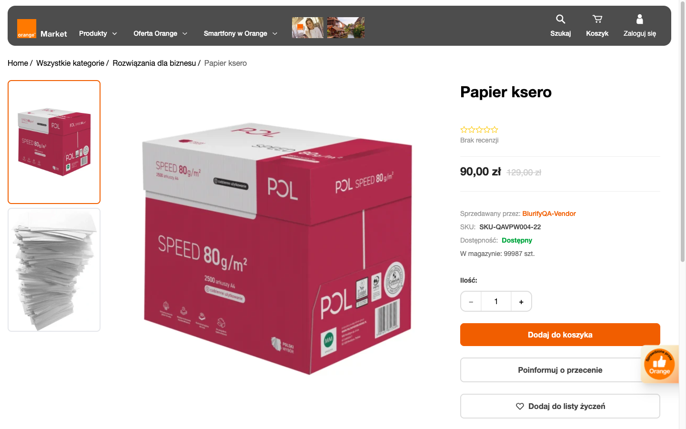

01 · Homepage
Karuzela wraz z nawigacją
Pełny pierwszy ekran: aktualne środowisko po prawej, makieta Figma Make po lewej.
Aktualne · orm.ss-dev.plPrzesuń suwakMakieta · Figma Make
02 · Homepage
Nowe karuzele promocyjne
Osobny ekran pokazuje zamianę karuzeli produktowej na skróty do promocji.
Karuzela produktowaPrzesuń suwakKaruzele promocyjne
05 · Listing page
Lista i karta produktu
Właściwe wyniki wyszukiwania. Moduł „Polecane produkty” nie zastępuje listy.
Aktualne kartyPrzesuń suwakLista produktów · Figma
06 · Product page
Zmiana układu wizualnego
Pełny pierwszy ekran karty produktu: galeria, informacje, zakup i sprzedawca.


Makieta · Figma
Aktualne · DEV
Aktualne · orm.ss-dev.plPrzesuń suwakMakieta · Figma Make
07 · Product page
Zmiany dostarczone w dokumencie
Osobne porównanie wariantu po audycie, bez mieszania go z głównym ekranem Figma.

Po audycie · dokument
Aktualne · DEV
Aktualne · orm.ss-dev.plPrzesuń suwakDokument po audycie